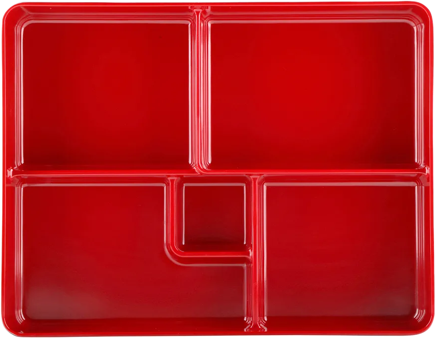

Decompression
Replace all 4 with 11, 5 with 22, and 6 with 33.
For example 4121316 becomes 111213133
and 31215343120264424653
becomes 3121223113120233111121133223
Tokenization
Divide all numbers into tokens of 3, and parse 0 as SPACE.
For example 111213133 becomes 111 213 133
and 3121223113120233111121133223 becomes
312 122 311 312 and 233 111 121 133 223
Substitution
With the cipher from the last step,
substitute all tokens, so
111 213 133 becomes ALI and
312 122 311 ... 133 223 becomes
TEST RADIO
found this insight useful? here's the complete 312 decoderCipher
Consider a base 3 number system, but instead of digits
0 1 and 2, it has the digits 1 2 and 3
Each digit corresponds to a base10 digit,
and that base10 digit corresponds to the Nth alphabet
So 111 -> A, 112 -> B, 113 -> C and so on...
...until 332 -> Z, 333 -> *